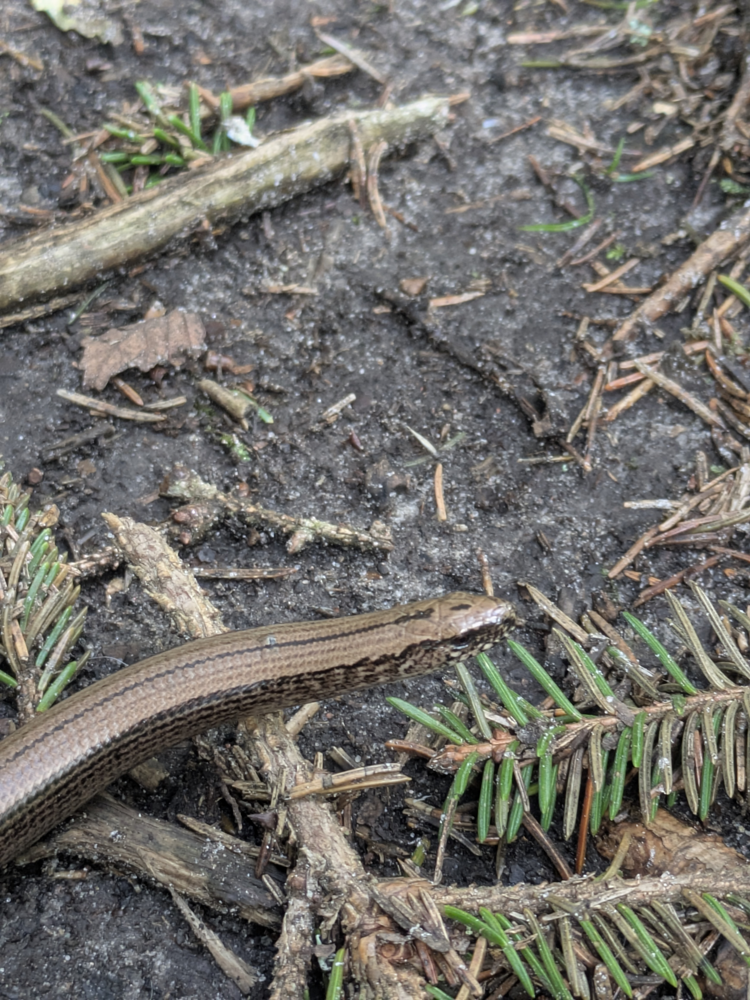
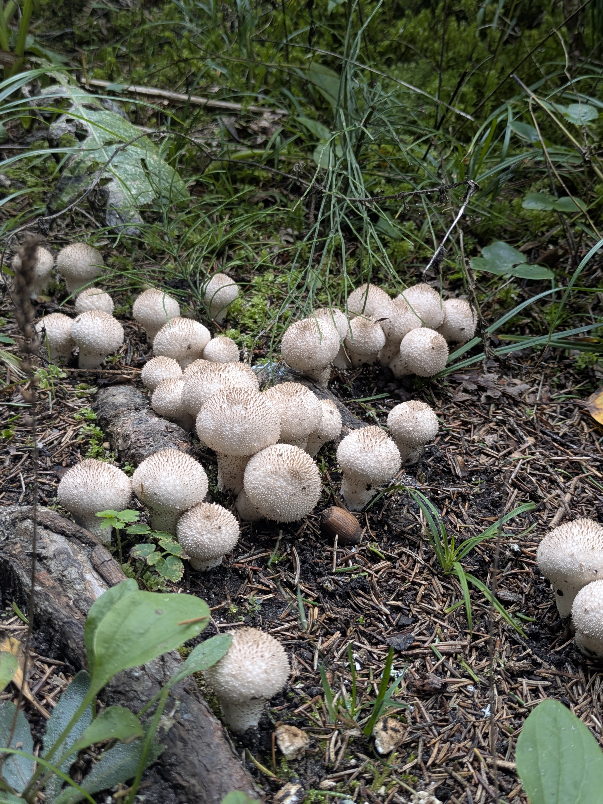
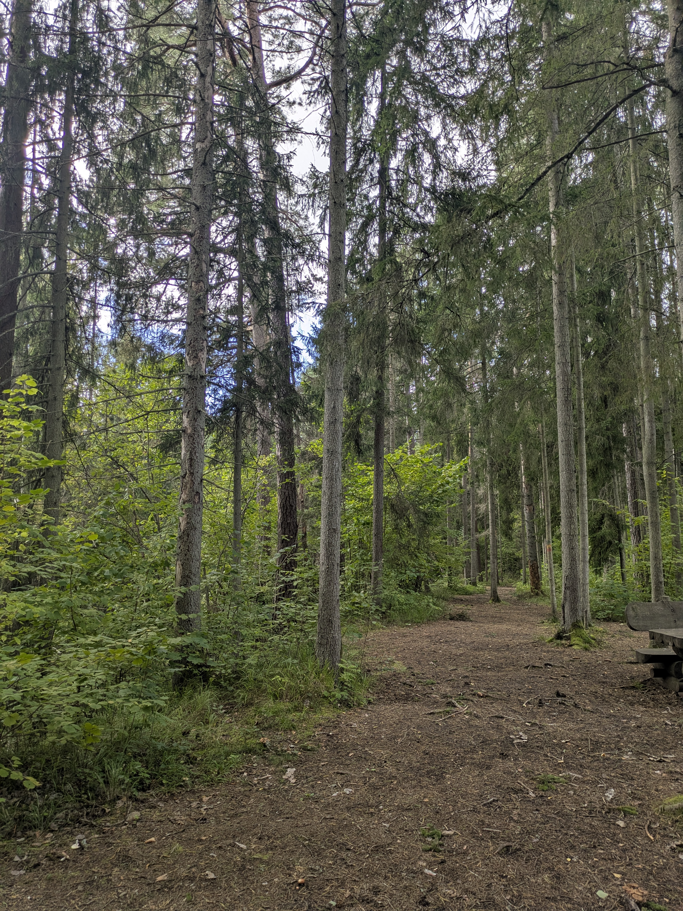
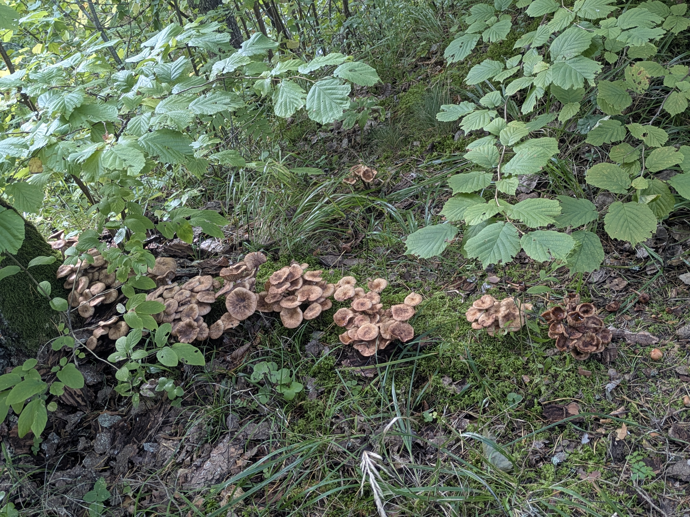
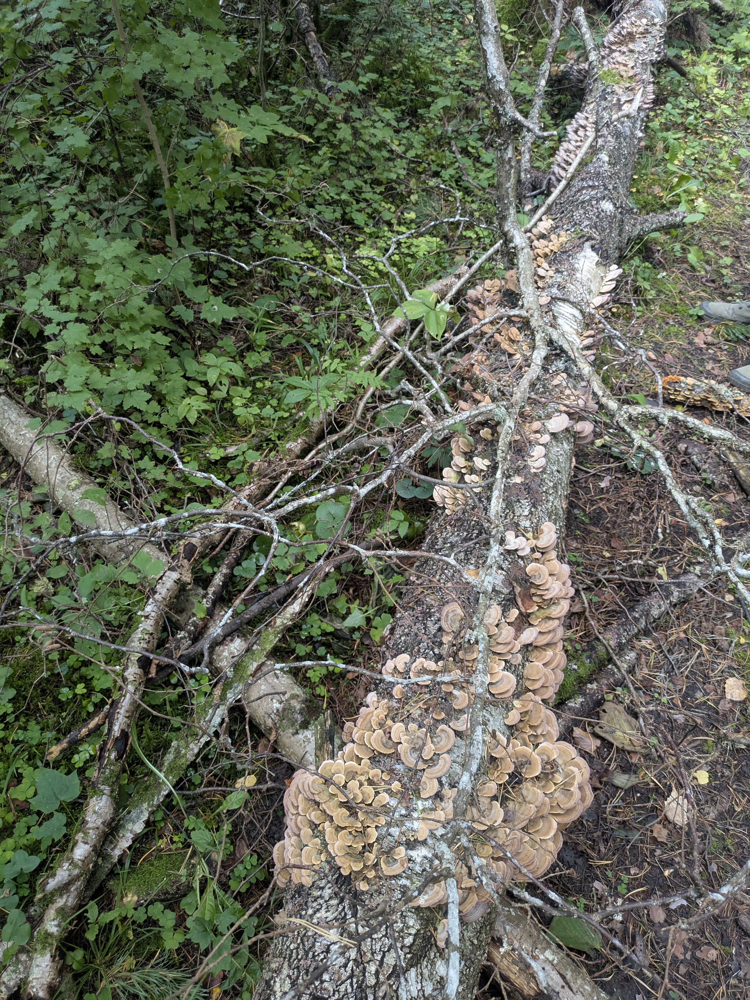
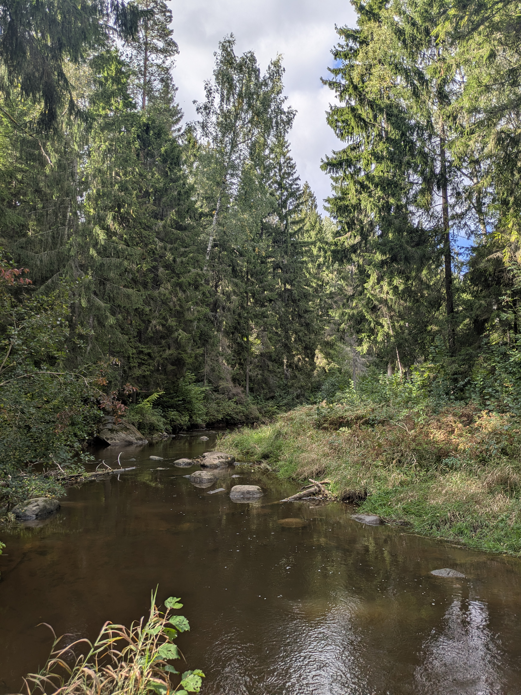
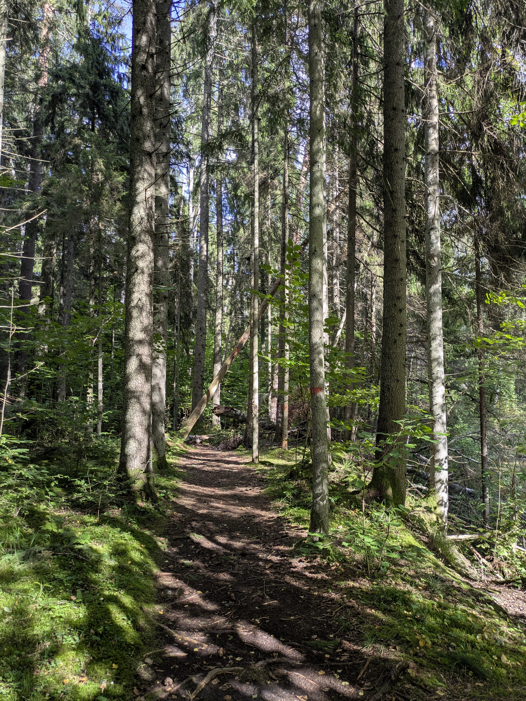
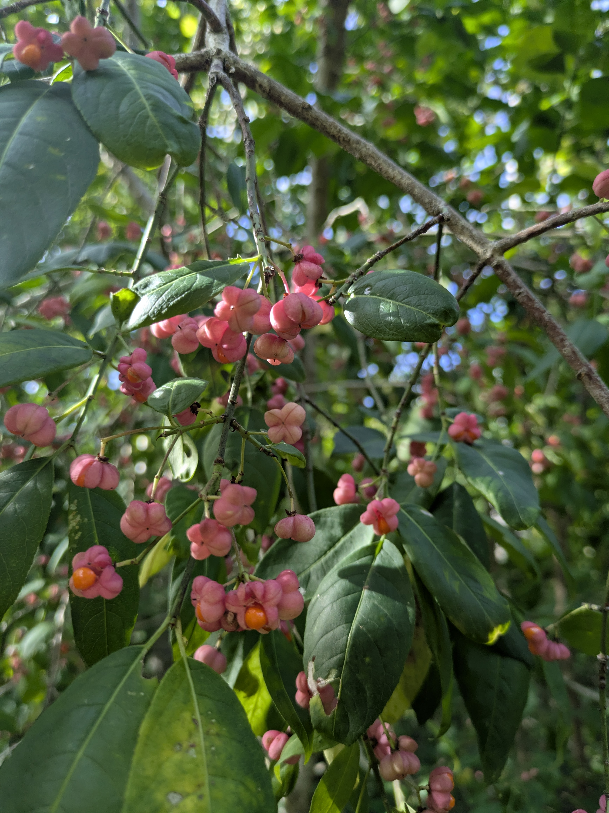
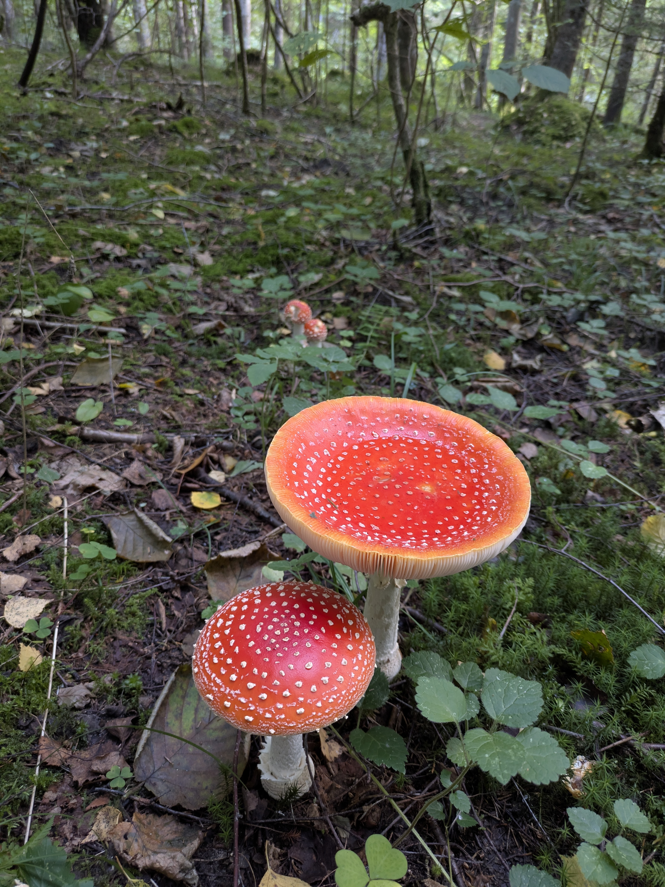
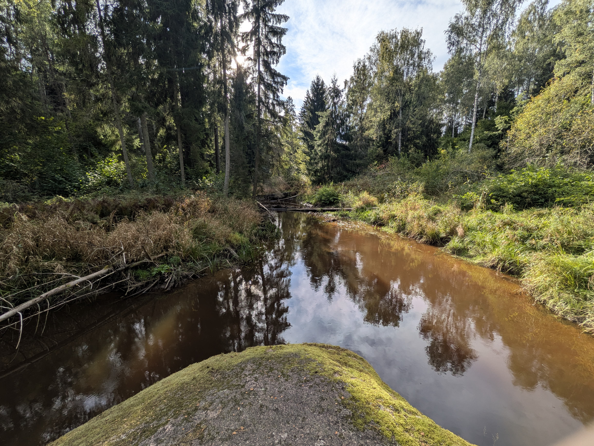

Kas te notiek?
Mani iemesli te kaut ko rakstīt, vēl turpina veidoties, bet pagaidām ir divas idejas:
- Accountability. Kā šis būtu latviski? Nu krc man varētu palīdzēt atskaitīties. Nu tā kā piefiksēt savus šī brīža mērķus, varbūt kaut kādus termiņus. Tad tas ir publiski un varbūt liks man to uztvert nopietnāk.
- Aizvietot instagram. Es jau sāku uz brīdi sliekties uz to, ka varētu postot veselīgi, bet realitāte ir, ka izmantot to stulbo lietotni iznīcina manu smadzeni. Un dažādos veidos, galvenokārt neizbēgami liekot sevi redzēt caur citu acīm, kā arī tas, kas notiek ar manām koncentrēšanās spējām 24/7, ja pāris vakarus pēc kārtas paskatos reelus. Kāpēc gan man nepostot šeit? Tā vietā, lai lauztu galvu, ko likt tur vai nelikt, un vēl pāranalizētu reakcijas/response - kvantitatīvi un kvalitatīvi (pat nezinu, kas ir sliktāk).
Es prognozēju, ka kliegšanai (gandrīz) tukšumā varētu būt dažādi ieguvumi, kurus nekādā citā formātā nevarētu atkārtot, tieši tā gandrīz dēļ.
Par 13/09/2026
Šodien es apņemos nolocīt vienu no savām haltūrām (iesniegt atskaiti un izdarīt research šai personai), pēc tam es apņemos pastrādāt pie tā viena uni uzdevuma un iesniegt to.
Nesaistīti, bet kā izrādās, šodien ir tēvu diena, un es labprāt to nebūtu uzzinājusi, jo tas paceļ daudz un dažādas pārdomas, un galīgi ne tikai par savu personīgo pieredzi, bet arī par to, kāpēc tās pieredzes ir teju universāli sliktas, un kāpēc ir daudzi patterni, kas atkārtojas man tuvajiem cilvēkiem.
Pastaiga gar Vietalvas upi
Man tur ļoti patika. Pirmoreiz redzēju glodeni. Tur vispār bija daudz un dažādas freaky sēnes un augi. Sadrupināju arī čagu (iepriekš nezināju par šādu konceptu), bet vēl nesaņēmos kko darīt ar tām drupačām. Salasīju arī daudz lazdu riekstus, kas man kaut kur fonā bija vasaras bucket listā.










Par nemainīgām vērtībām
Wordart mācījos veidot sākumskolā pirms teju 20 gadiem, bet ir skaidrs, ka tā aktualitāte nezūd, jo šobrīd studējot savās otrajās bakalaura studijās, mēs atkal ar to darbojamies.